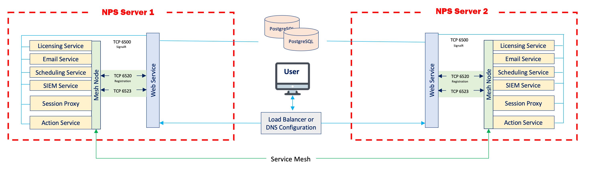

Summary
This article will guide the user through the process of setting up a deployment with multiple NPS servers communicating with a single Postgres server. Instructions are included for configuring TLS for all network traffic to the Postgres server. Optional migration steps are included for users who wish to use a Postgres database from an existing NPS deployment.
This diagram illustrates the desired network architecture.

Instructions
Configuring the Postgres Server
- On the Postgres server, open the NPS_Setup.exe installer, and install Postgres 12. Next, use the NPS_Setup.exe installer to install NPS. (This is necessary for the Postgres database to be properly configured. There will be no need to launch NPS on the Postgres server at any point in this process, and the Postgres database can be entirely administered from the remote NPS servers.)
- (Recommended) Now that the Postgres database is properly configured, you may uninstall NPS on the Postgres server. This will conserve disk space and computing resources.
- Open the sbpam_node.json file. On a default installation to the C: drive, it will be located here:
C:\ProgramData\Stealthbits\PAM\ProxyService\sbpam_node.json
- Ensure that both "localhost" and the FQDN of your Postgres server are populated under "advertise":
{ "advertise": ["testlab-pg01.sbpamtestlab.com", "localhost"], "tags": [] } - Navigate to the TLS certificate directory. On a default installation to the C: drive, it will be located here:
C:\ProgramData\Stealthbits\PAM\tls\certs\
- Copy the "\ProgramData\Stealthbits\PAM\tls\certs\sbpam-node.crt" and "\ProgramData\Stealthbits\PAM\tls\keys\sbpam-node.pem" files into the root of the Postgres data directory. On a default installation to the C: drive, the Postgres data directory will be located here:
C:\ProgramData\Stealthbits\Postgres12
(If you wish to copy the .crt and .pem files to a subdirectory of the data directory, you will have to specify their relative subpaths later on in these instructions, when configuring the postgresql.conf file.) - Open the Certificate Manager. Import the "\ProgramData\Stealthbits\PAM\tls\cacerts\sbpam-region.crt" certificate into the Trusted Root.
- Open the pg_hba.conf file. On a default installation to the C: drive, it will be located here:
C:\ProgramData\Stealthbits\Postgres12\pg_hba.conf
Edit the file to contain one or more entries which allow connections from your NPS application servers. For instance, to allow all IP addresses in the 10.2.0.x range, add an entry ending in /24:host all all 10.2.0.0/24 md5
Or, for granular access on a per-IP basis, add a line for each IP address ending in /32:host all all 10.2.0.1/32 md5 host all all 10.2.0.2/32 md5
- Open the pg_hba.conf file. On a default installation to the C: drive, it will be located here:
C:\ProgramData\Stealthbits\Postgres12\postgresql.conf
- Under "# - SSL -", edit the SSL settings as follows:
# - SSL - ssl = on #ssl_ca_file = '' ssl_cert_file = 'sbpam-node.crt' #ssl_crl_file = '' ssl_key_file = 'sbpam-node.pem'
- Restart the Postgres service. Your Postgres server should now be ready to accept TLS-encrypted traffic.
Configuring the NPS Servers
- On each NPS server, open the SB_Setup.exe installer, and install Postgres 12. Next, use the SB_Setup.exe installer to install SbPAM.
- Once NPS is installed, open the appsettings.json file. On a default installation to the C: drive, it will be located here:
C:\Program Files\Stealthbits\PAM\Web
Edit this file so that the Database key references the hostname of the Postgres server:"Database": { "Host": "testlab-pg01.sbpamtestlab.com", "Port": 5432 } - Obtain a copy of the "\ProgramData\Stealthbits\PAM\tls\cacerts\sbpam-region.crt" certificate from the Postgres server. Open the Certificate Manager. Import the sbpam-region.crt certificate into the Trusted Root of the local machine.
You should now be able to access the NPS console at https://[yourNPSServerIP]:6500, and all traffic should be TLS encrypted. Note: if you are receiving an IIS certificate warning from your browser, install an IIS certificate using this KB article.
Key Export/Import
In order to ensure that encryption keys are in agreement between NPS servers, please follow the instructions outlined in this article .